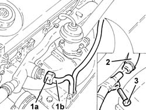
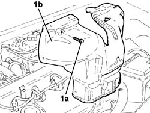
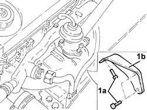
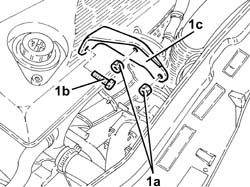

1064A30 turbocharger bracket - r r
- Path
- Procedures > 10 ENGINE > 1064 ENGINE TURBOCHARGING SYSTEM > 1064A turbo charger assembly > 1064A30 turbocharger bracket - r r
- Kind
- repair procedure (removal / refitting; the operation number is the code)
- Applies to
- engines: 1.9 JTD 8v , 2.4 JTD 10v; all production periods
- Interactive page
- https://sloeber94.github.io/elrnDB-a156/en/#/3237830
Applies to: engines: 1.9 JTD 8v ; all production periods
 Removing
Removing
 Refitting
RefittingPosition the vehicle on the ramp.
7055B54 under-engine guard - r r .
1016A10 sound-proofing cover - r + r .
1. Undo the connector (1a) and disconnect the coolant outlet pipe from the engine oil heat exchanger (1b), water pump rigid inlet pipe side.
2. Disconnect the flexible pipe from the rigid coolant supply pipe to the engine oil heat exchanger.
3. Undo the bolt fixing the rigid coolant supply pipe to the engine oil heat exchanger.
Move the coolant inlet/outlet pipes from the engine oil heat exchanger, as necessary.

Applies to: engines: 1.9 JTD 8v ; all production periods
1. Undo the bolts (1a) and remove the exhaust manifold heat shield (1b).

Applies to: engines: 1.9 JTD 8v ; all production periods
1. Undo the bolts (1a) and remove the turbocharger mounting bracket (1b).

Applies to: engines: 1.9 JTD 8v ; all production periods
Refitting
RemovingPlace the turbocharger mounting bracket back in its housing and secure it using the bolts.
Fit the exhaust manifold heat shield and fix it using the bolts.
Place the coolant inlet/outlet pipes from the engine oil heat exchanger back in their housings.
Connect the flexible pipe to the rigid coolant supply pipe to the engine oil heat exchanger.
Tighten the bolt fixing the rigid coolant supply pipe to the engine oil heat exchanger.
Connect the coolant outlet pipe to the engine oil heat exchanger, water pump rigid inlet pipe side and tighten the connector.
1016A10 sound-proofing cover - r + r .
7055B54 under-engine guard - r r .
Top up the engine cooling system with the recommended fluid.
 | Type | Component | Name | Qty. |
|---|---|---|---|---|
- | Fluid | ENGINE COOLING CIRCUIT | Mixture 50% Paraflu11 for Alfa Romeo/distilled water | 6.1 |
Remove the car from the ramps.
Applies to: engines: 2.4 JTD 10v; all production periods
Removing
Refitting1. Undo the nuts (1a) and the bolt (1b) and remove the turbocharger bracket (1c).

Applies to: engines: 2.4 JTD 10v; all production periods
Refitting
RemovingPlace the turbocharger mounting bracket back in its housing and secure it using the bolt and nuts.